01 / CATÁLOGO IMOBILIÁRIO
RA Broker
Desenvolvi para a imobiliária RA Broker um catálogo digital dos imóveis de Porteirinha e região, com busca por cidade e filtros por tipo e faixa de preço.
Ver catálogo da RA Broker ↗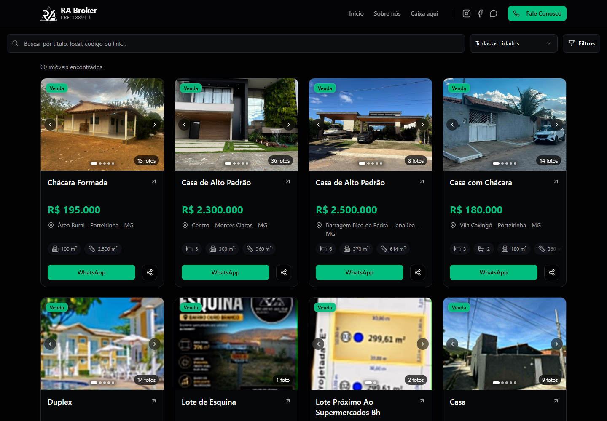
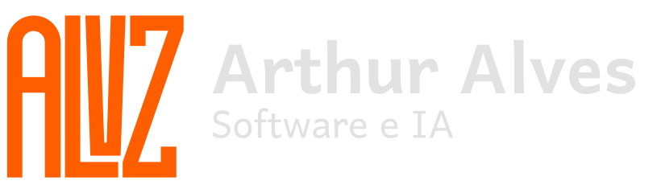
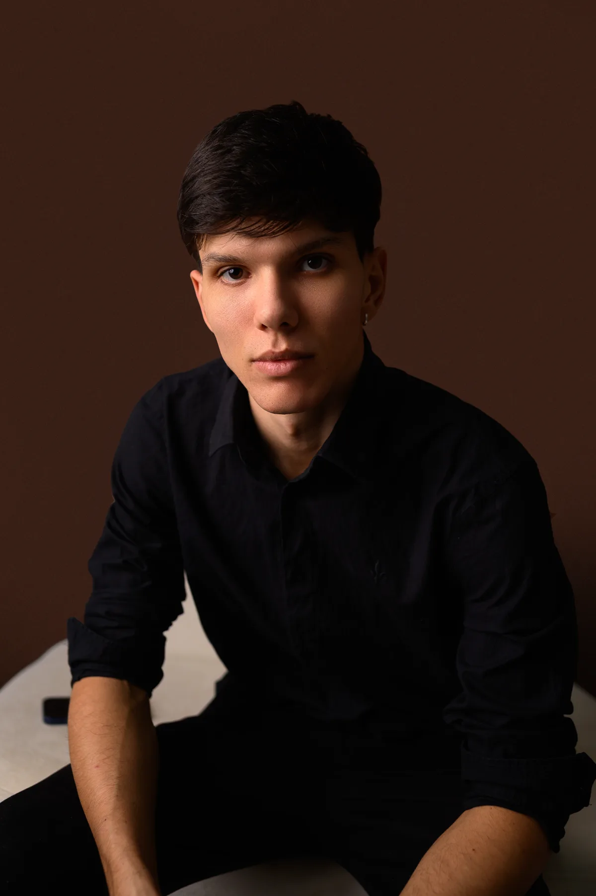
ARTHUR ALVES — PORTFÓLIO
Crio identidades visuais e desenvolvo sites e sistemas.
Desenvolvi para a imobiliária RA Broker um catálogo digital dos imóveis de Porteirinha e região, com busca por cidade e filtros por tipo e faixa de preço.
Ver catálogo da RA Broker ↗
Uma visão geral para acompanhar equipes, partidas e placares.
Em desenvolvimento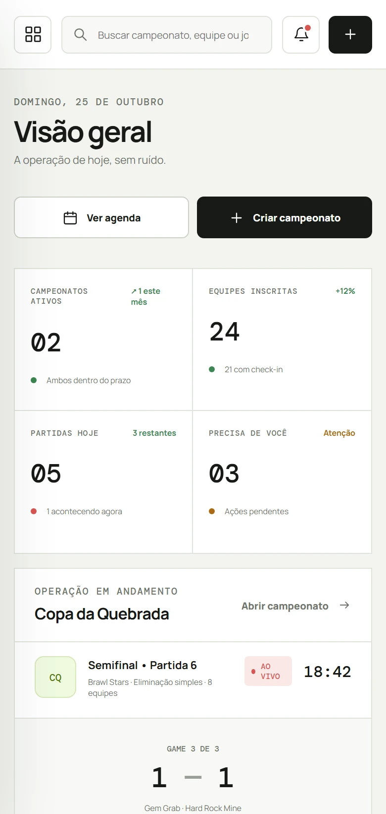
Convites digitais para casamentos e festas de 15 anos, com confirmação de presença e gestão da lista de convidados.
Organização de contas, cartões e despesas em uma visão mensal.
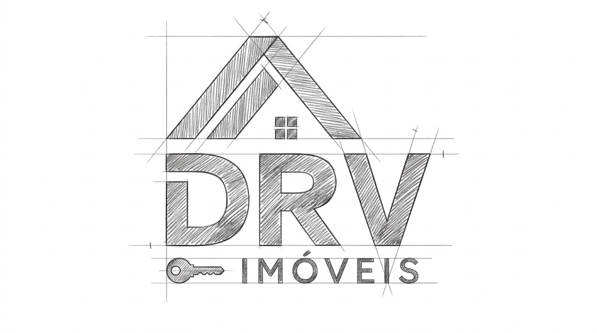
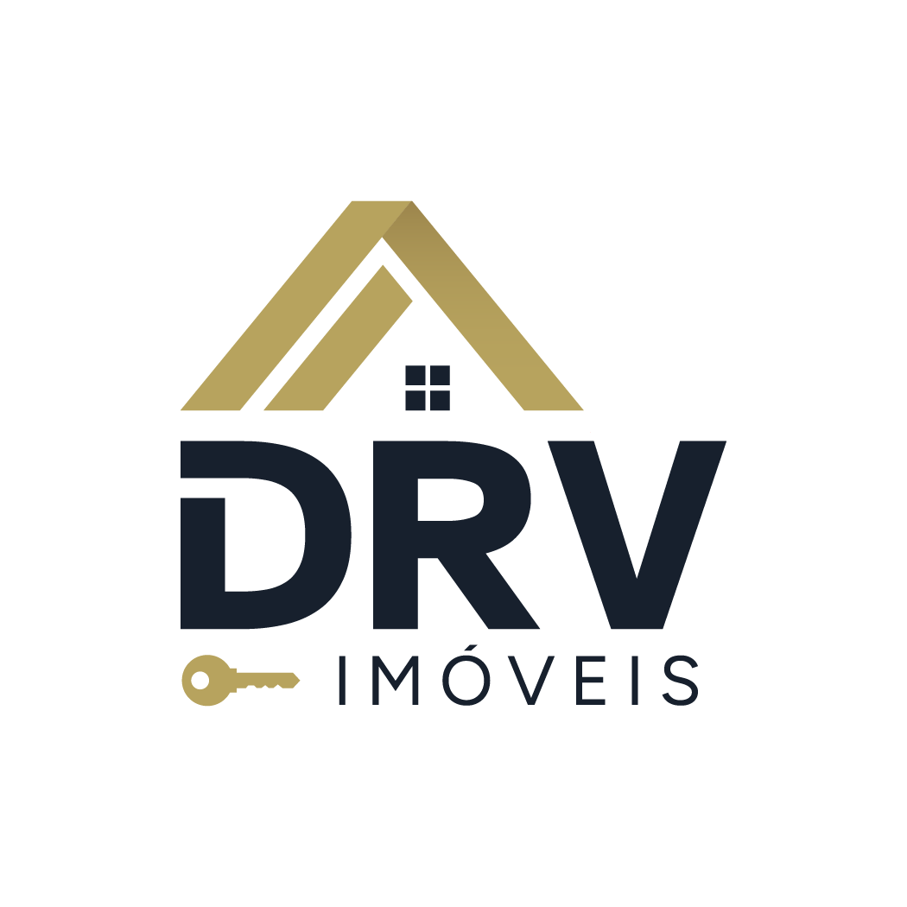
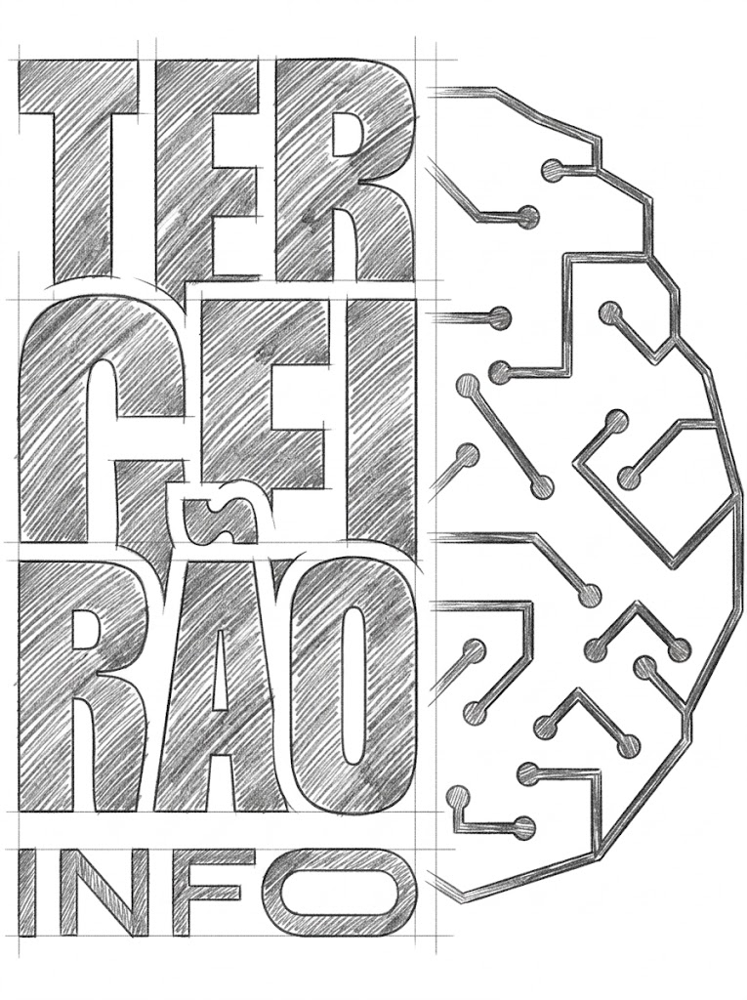
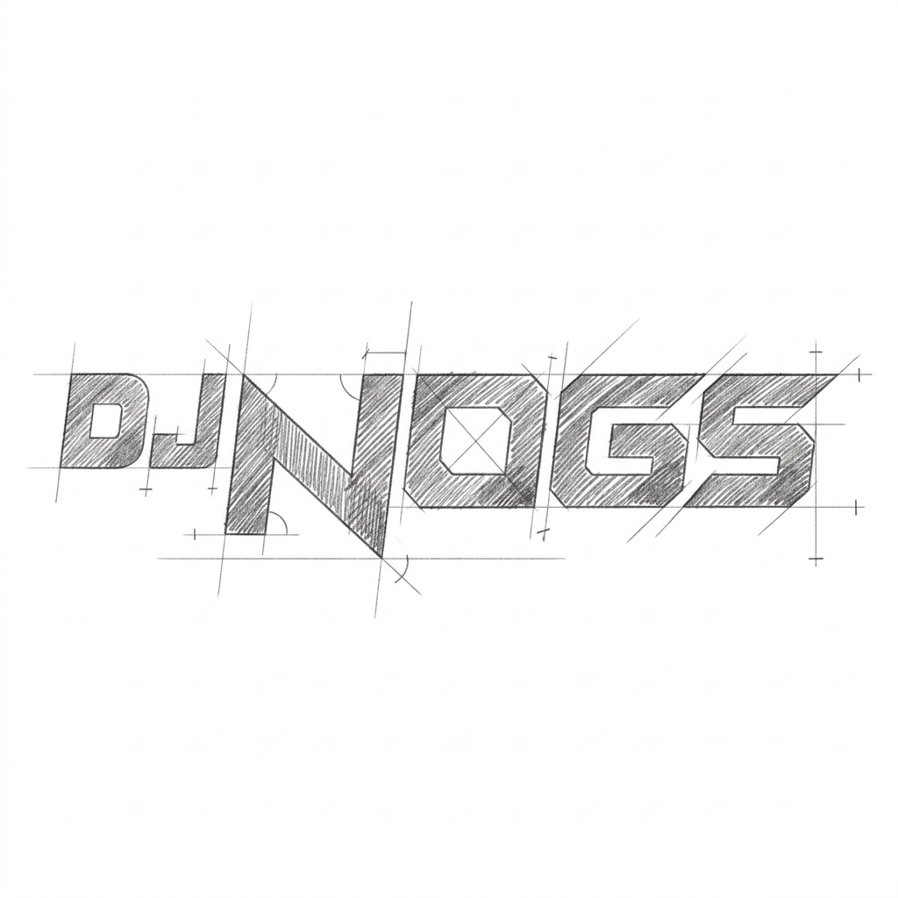
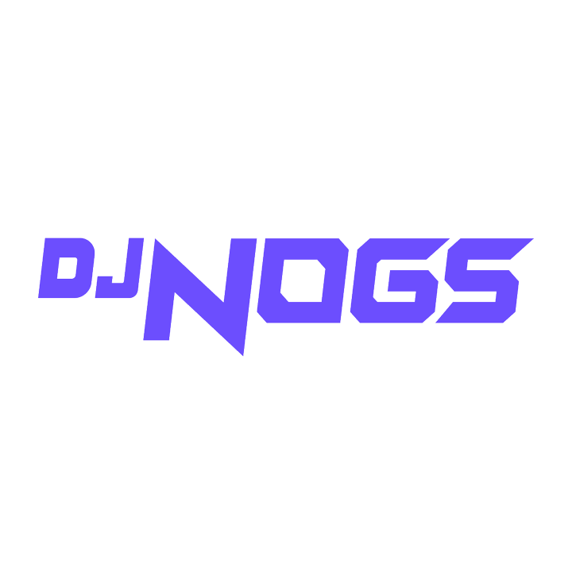
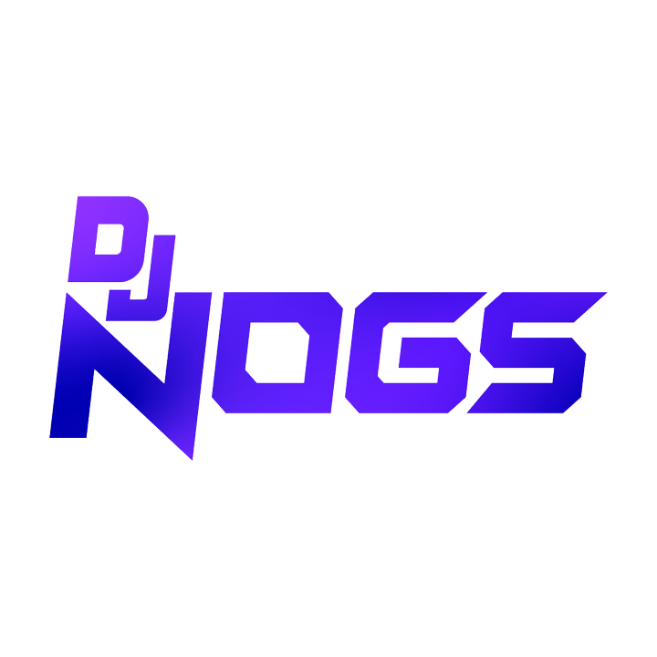
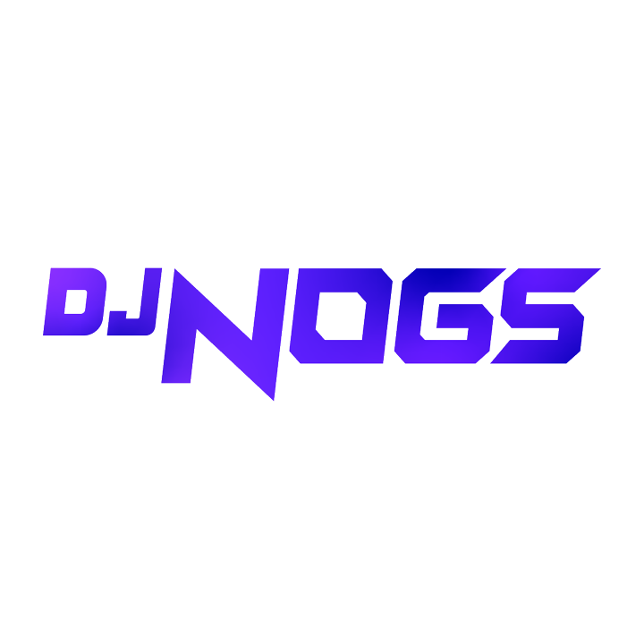
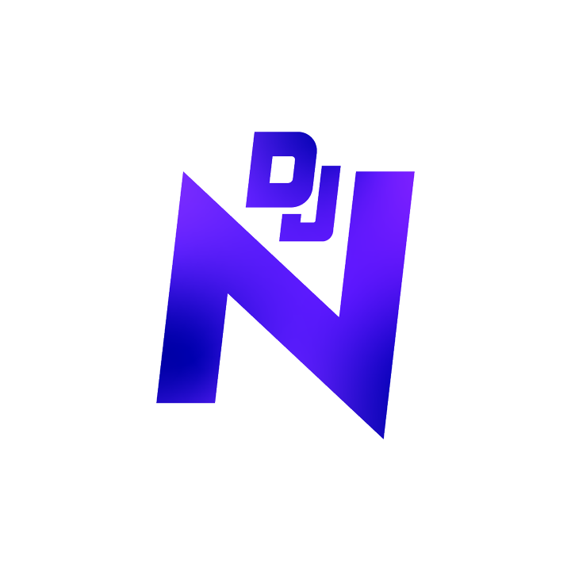
A ALVZ é a marca que assina meu trabalho.
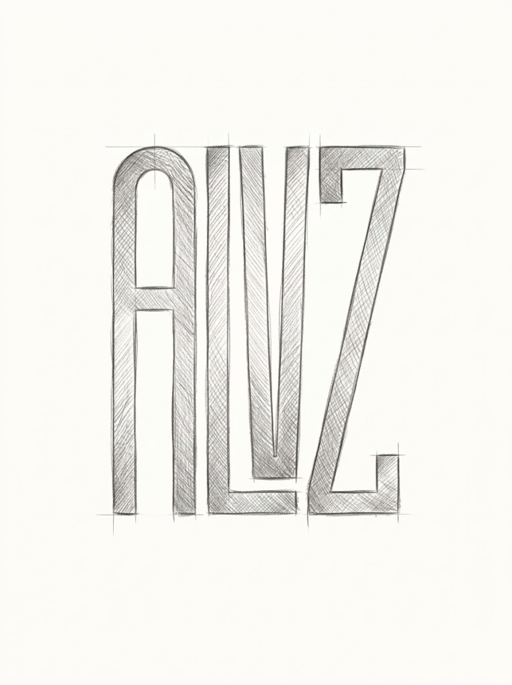
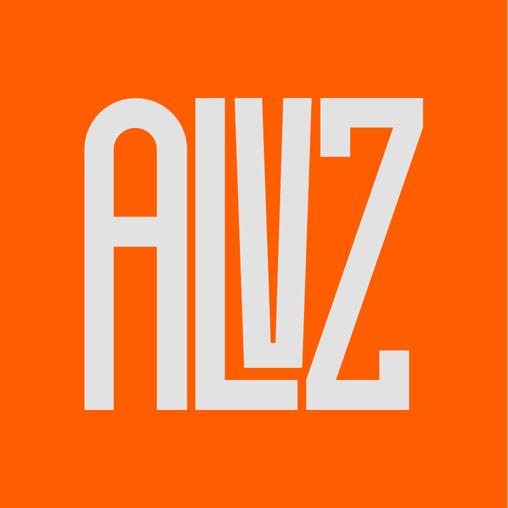
Sou o criador da ALVZ. Trabalho com marca, interface e desenvolvimento, do primeiro esboço ao projeto funcionando.
IDENTIDADE VISUAL / SITES / SOFTWAREMe conte o que você quer criar.
Uma conversa direta, do começo à entrega.